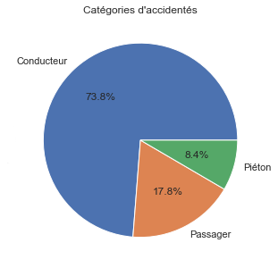
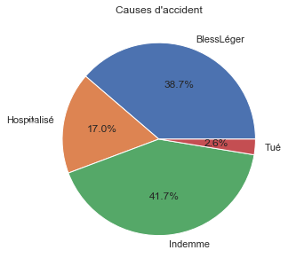
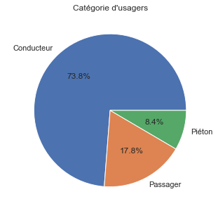
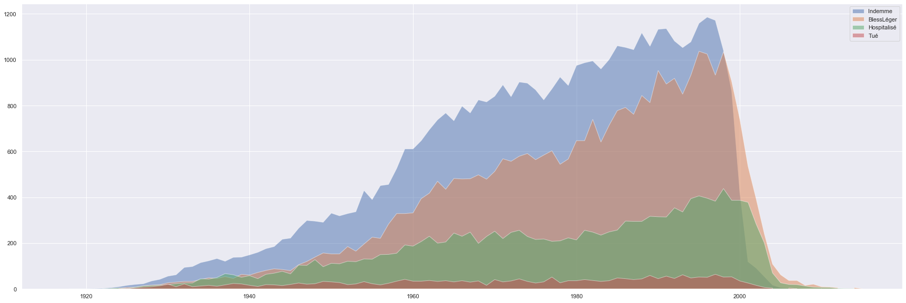

Accidents corporels survenus en 2018
La présente étude se concentre sur la base de données des accidents corporels survenus en 2018 sur les routes françaises.
Pour cette étude, on se concentre sur les usagers victimes de ces accidents, avec les attributs suivants :
Pour cette étude, on se concentre sur les usagers victimes de ces accidents, avec les attributs suivants :
- Le numéro d'accident
- L'identifiant du véhicule
- La place occupée par l'usager
- La catégorie d'usager
- La gravité de l'accident
- Le sexe de l'usager
- L'année de naissance de l'usager
- Le motif du déplacement au moment de l'accident
- La présence et l'utilisation d'un équipement de sécurité
- La localisation du piéton, le cas échéant
- L'action du piéton, le cas échéant
- Le fait que le piéton soit seul ou accidenté, le cas échéant
Quelques chiffres sur le dataset
- Accidents répertoriés
- 57 783
- Usagers concernés
- 130 169
- Propriétés sur les accidents
- 12
Répartition des usagers



Gravité des accidents en fonction de l'année de naissance de l'usager

Les densités sont ici superposées.
Les densités sont ici superposées.